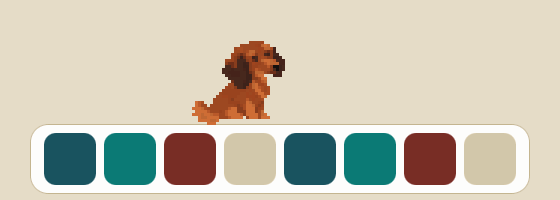
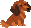
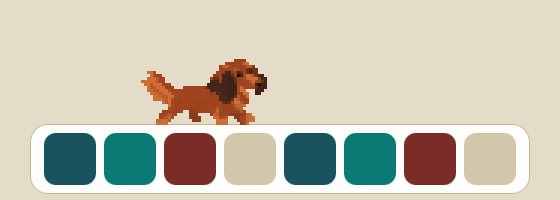
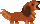
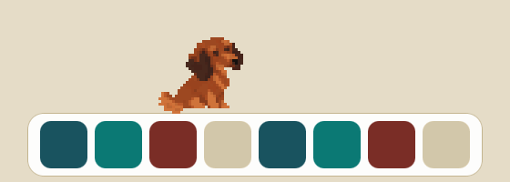
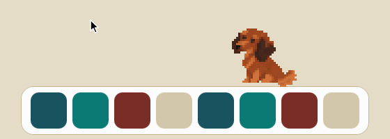
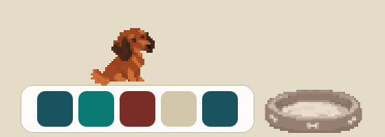
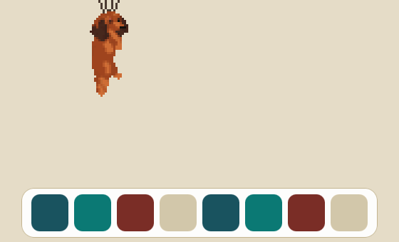
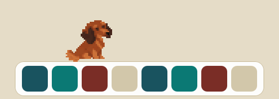

Digs a burrow

Sniffs, digs with both front paws, dives in head first and pops out somewhere else.

JulieFree · open source · macOS 12+
Julie trots along the top of your macOS Dock, digs burrows, chases squirrels and naps in her bed next to it. She never talks. She is just a dog being a dog.


No speech bubbles, no notifications. When she has something to say, she barks: little pixel sound waves, nothing more.
She is modelled on a real long-haired red dachshund called Julie, and she behaves like one.

Sniffs, digs with both front paws, dives in head first and pops out somewhere else.

Press ⌃⌥P for a biscuit at your cursor, or let it rain treats from the menu. Too high? She begs on her hind legs.

Press ⌃⌥M or throw the ball with your mouse. She brings it back to your cursor.

Her bed sits next to the Dock. Click it to send her to sleep, click again to wake her. Sometimes she goes on her own.

Pick her up with the mouse and let go from high up. She floats down on a parachute, lands on the Dock and shakes herself off. From lower down she simply lands, without bouncing.

A squirrel shows up and Julie sprints after it, tongue out. Or it rains treats, or three balloons lift her up and pop one by one. You never know which one is next.
Optional
Connect it in Settings. Julie adds four small hooks to ~/.claude/settings.json and keeps a backup. Disconnect any time.
Prefer the Terminal? This does step 2:
xattr -dr com.apple.quarantine /Applications/Julie.appNeeds macOS 12 or later, on Apple Silicon or Intel, with the Dock at the bottom of the main display.
Julie never touches the network and collects nothing. To do her job she reads the Dock settings, where windows are (not what is in them), the cursor position, and whether a full-screen app is open. Her settings live in ~/.jezevcik.